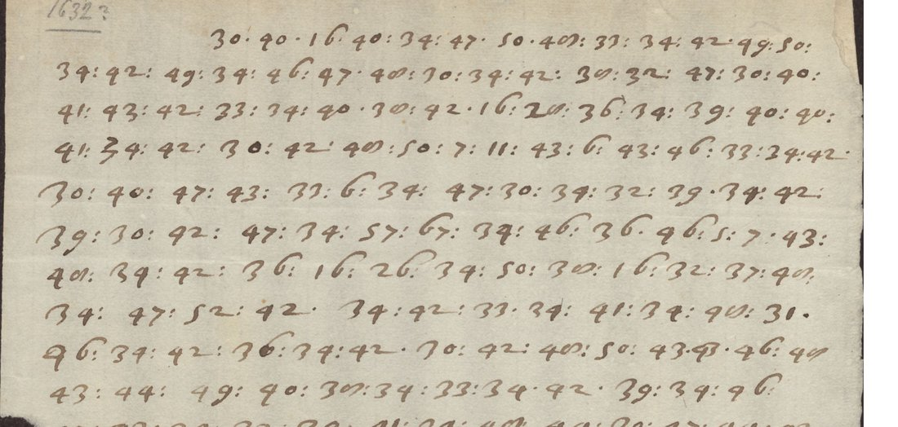

At a glanceNot solved · 0 of 465 number groups
- The letter
- A letter to a “Mr …ilick” at Amsterdam, pencil-dated “1632?”. Sender, language and subject unknown.
- Where
- Riksarkivet, Stockholm, Chifferklaver låda II:133 (wrapper II:104); DECODE R4306, undated (1600–1699), with no decipherment recorded. Formerly part of catalogue item 207.
- The cipher
- Numbers from 5 to 203 separated by colons, most of them between 30 and 52, no clear words. The index of coincidence (0.073) points to one sign per letter.
- How it was tried
- Simple and homophonic substitution annealed against ten languages, on two transcriptions, and two keys from the same boxes. Nothing fits.
- Still open
- The whole cipher. Whether the scribe’s variant figures are separate signs, and 68 of the 70 box keys, are untried.
This letter was filed on this site until 14 October 2026 with thirteen other Riksarkivet records of catalogue item 207. They are different ciphers, each with its own page: the archbishop of Bremen’s letters of 1631 (deciphered), R4282 (deciphered by George Lasry), R4284, Rusdorff’s letters of 1628 and the E 708 letters of 1633.
01The letter

The pair “34 42” occurs 31 times. The scribe writes some figures in two shapes: 34 and 74, a plain 40 and a looped one, 30 and 70. A second transcription kept those shapes apart in case they are different signs; it has 465 groups and 62 forms, against 492 and 51 in the first.
02What was tried
- 21 September 2026: simple-substitution and homophonic annealing over four-letter models in Dutch, German, Latin, French, Swedish, English, Italian, Spanish, Portuguese and Danish, also with the lowest and highest numbers taken as word breaks. No language converged: the best score was about −4.3 per letter, where real text scores about −2.5. Two faults in the first runs (a search bug and an artefact of the language model) were fixed before these runs.
- The same on the second transcription: no fit.
- Two keys from the same boxes, the Transylvanian “Schauis” key (R4310) and a 1632 key in which 30 ends every word (R4296). Neither fits.
03What remains
- All of the cipher. A one-sign-per-letter key from the boxes would show at once, and 68 of them are untried. The variant figures need settling on the image, and the addressee at Amsterdam is unidentified.
04Sources
- Riksarkivet, Stockholm, Chifferklaver låda II:133: DECODE R4306 (three images).
- Key records of Chifferklaver låda II, DECODE R4259–R4329.
- No earlier decipherment was found; that does not prove none exists.
Transcriptions and notes: targets/riksarkivet4306/; the solver is in targets/riksarkivet1628/.